Roasting brings out the aroma and flavor that is locked inside the green coffee beans. Beans are stored green, a state in which they can be kept without loss of quality or taste. A green bean has none of the characteristics of a roasted bean -- it’s soft and spongy to the bite and smells grassy.
Roasting causes chemical changes to take place as the beans are rapidly brought to very high temperatures. When they reach the peak of perfection, they are quickly cooled to stop the process. Roasted beans smell like coffee, and weigh less because the moisture has been roasted out. They are crunchy to the bite, ready to be ground and brewed.
Once roasted, however, they should be used as quickly as possible before the fresh roast flavor begins to diminish.
Light brown in color, this roast is generally preferred for milder coffee varieties. There will be no oil on the surface of these beans because they are not roasted long enough for the oils to break through to the surface.
This roast is medium brown in color with a stronger flavor and a non-oily surface. It’s often referred to as the American roast because it is generally preferred in the United States.
Rich, dark color, this roast has some oil on the surface and with a slight bittersweet aftertaste.
This roast produces shiny black beans with an oily surface and a pronounced bitterness. The darker the roast, the less acidity will be found in the coffee beverage. Dark roast coffees run from slightly dark to charred, and the names are often used interchangeably — be sure to check your beans before you buy them!
1. Green unroasted coffeeThis is a wet processed, Central American coffee, a accidental blend I have had sitting around. Each photo here are different coffee seeds from the batch I roasted so size and shape will vary seed to seed. |
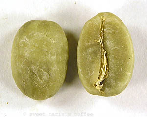 |
2. Starting to paleDrum roasters take a long time to transfer heat to coffee so there is little change in the first few minutes. In an air roaster coffee gets to this stage so much faster because of the efficient heat transference of the rapid moving air stream, so the whole warm-up phase can be as fast as two minutes. |
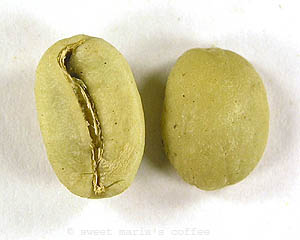 |
3. Early yellow stageAt this point the coffee is still losing water in the form of steam and no physical expansion of the bean has taken place. The coffee has a very humid, hay-like smell at this point. All of these warm-up stages leading up to first crack are part of an endothermic process, as the coffee takes on heat, leading to the first audible roast reaction, the exothermic 1st crack. |
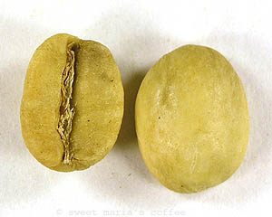 |
4. Yellow-Tan stageThe roast is starting to assume a browner color, and a marbling appearance is starting to emerge. No bean expansion yet. The first "toasty" smells (toasted grain, bread) can be detected, and a bit less wet, humid air coming off the coffee. Note that some coffees turn a brighter and more distinct yellow at this time, such as Costa Rican and Mexican coffees. |
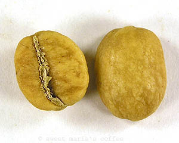 |
5. Light Brown stageFirst crack is drawing near at this point. Some bean expansion is visible as the central crack in the coffee has opened slightly. The coffee releases some silverskin or chaff. |
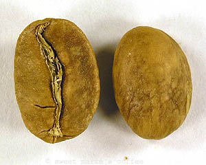 |
6. Brown StageNow we are right at the door of first crack. The coffee has browned considerably, which is partly due to browning reactions from sugars, but largely due to another browning reaction called the Maillard Reaction (which also is responsible for browning of cooked beef!) |
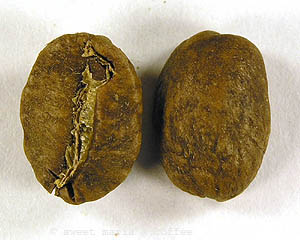 |
7. 1st crack beginsAt this point, the very first popping sounds of the First Crack can be heard. This sound can be similar to popcorn pops (in distinction to the sound of the Second Crack, which has a shallower sound, more like a snap). At the point of first crack the internal bean temperature would be around 356 f. |
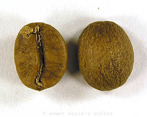 |
8. 1st crack under wayAs first crack continues the coffee still appears mottled and uneven in color. The coffee starts expanding in size and shows visible cracks. The amount of chaff in the crease of the seed is noticeably less. |
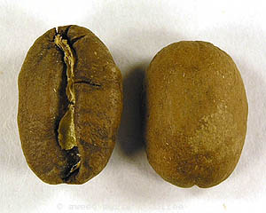 |
9. 1st crack finishesThis is considered a City Roast. First crack is done and the roast is stopped. |
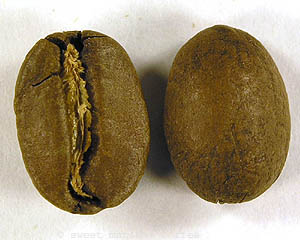 |
10. City+ roastCity+ means the coffee has cleared first crack, and time is allowed for an even bean surface appearance to develop. |
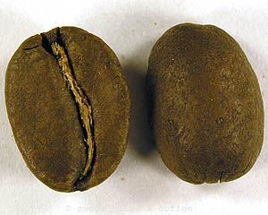 |
11. Full City roastOn the verge of 2nd crackThis image represents a Full City roast; the coffee is on the verge of 2nd crack. This might be hard to judge the first few times you roast; after a while, you will have a feel for it. The beans are have a slight sheen of oil and the edges are softer. |
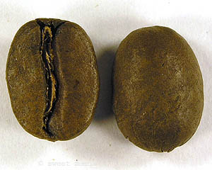 |
12. Full City+ roastFirst audible snaps of 2nd crackThe darker side of a Full City roast is Full City +, where the coffee has barely entered 2nd crack. A few snaps are heard, and the roast is then stopped. Second crack may continue into the cooling phase - this is called "coasting". The more effective and rapid your cooling - the better your ability to stop the roast at the degree you want. |
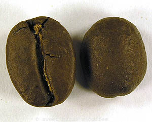 |
13. Vienna - Light French roast2nd crack is under wayThe Vienna stage (also called Continental) to Light French stage is where you begin to find Origin Character eclipsed by Roast Character. A dark or heavy roast is at odds with buying coffee for its distinct origin qualities. Dark roast coffees tend to taste more like each other - as the differences due to distinct origins are obscured by the carbony roast flavors. Nontheless, some coffees are excellent at this stage (our Puro Scuro blend is engineered for this roast range). |

|
14. Full French roast2nd crack is very rapid, nearing its end.Sugars are heavily caramelized (read as burned) and are degraded; the woody bean structure is carbonizing and the seed continues to expand and loose mass. The body of the resulting cup will be thinner/lighter as the aromatic compounds, oils, and soluble solids are being burned out of the coffee and rising up to fill your house with smoke. 474 is well beyond any roast I do on the Probat. I will go as high as 465 on a couple blends, and that's my limit. |
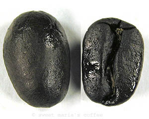 |
15. Fully carbonizedAt this stage, the coffee can be over 25% ash; it is carbonized, dead, charcoal. |
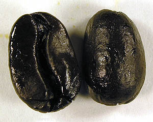 |
16. Imminent fire ...This bean is right at the verge of fire - in fact you can actually start a fire with a large batch once you dump the coffee out of the roast drum into the cool tray. The sudden rush of oxygen might be the needed ingredient for cafe del fuego. Kids, grab your marshmallows! Hope you like 'em smokey! |
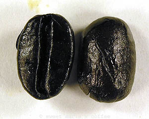 |